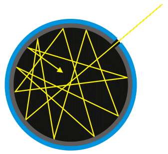
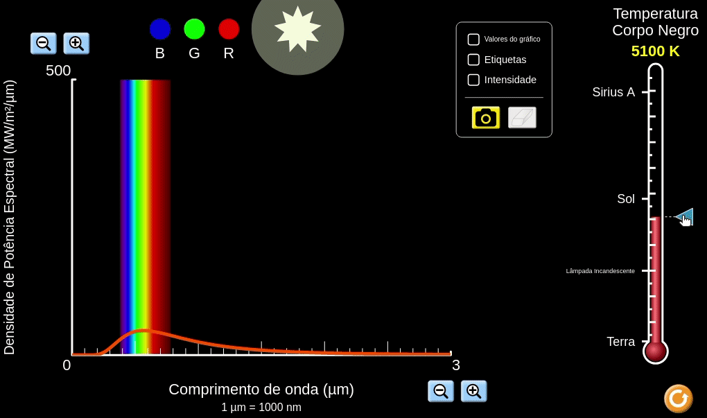
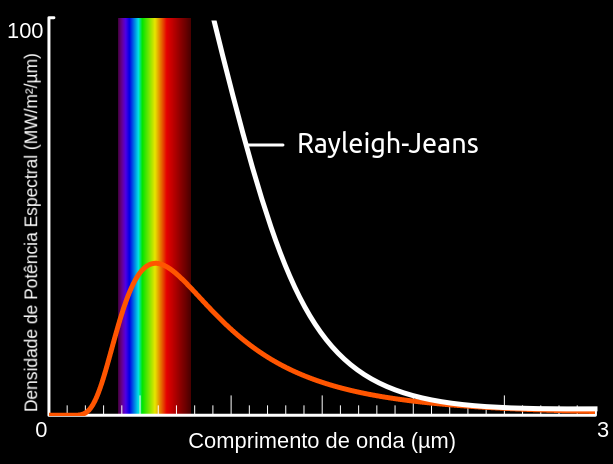
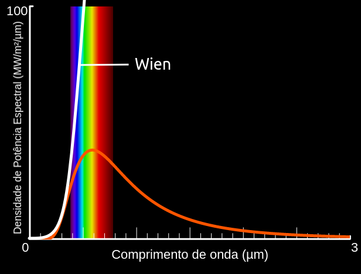
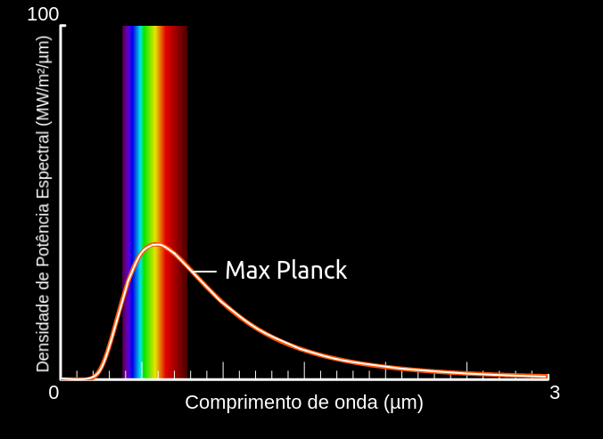

Aula13-98: Radiação de corpo negro
Corpo negro
|
Um corpo negro é um objeto físico ideal que, quando observado, apenas emite luz gerada por si próprio. Isto é, ele não reflete luz de outras fontes; pode até absorver luz de fontes externas, mas toda a luz que ele emite é proveniente de mecanismos internos ao objeto. As estrelas são objetos que, em geral, se assemelham a um corpo negro. |
 |
|
Um pedaço de carvão incandescente também se assemelha a um corpo negro, pois boa parte das ondas eletromagnéticas que ele emite é gerada por ele mesmo. Ele também reflete um pouco da radiação do ambiente, o que acaba descaracterizando sua condição de corpo negro ideal. |
Espectro de emissão de um corpo negro: um desafio para os cientistas
Com o surgimento da espectroscopia, muitos cientistas começaram a estudar o espectro de emissão de radiação dos corpos negros e obtiveram resultados experimentais como o ilustrado abaixo.
|
Observe que, na medida em que a temperatura do corpo aumenta, ele passa a emitir mais radiação e, mais especificamente, radiação de menor comprimento de onda. |
 |
A partir desse momento, com o espectro de emissão de radiação de um corpo negro em mãos, o grande desafio da física passou a ser descrever esse gráfico por meio de uma lei física.
Abordagem de Rayleigh-Jeans
John William Strutt, terceiro Barão de Rayleigh (★ 1842 — 1919 ✝), e James Hopwood Jeans (★ 1877 — 1946 ✝) tentaram descrever a emissão de radiação de corpo negro a partir de uma abordagem centrada unicamente em análise dimensional. Essa tentativa os conduziu à fórmula de Rayleigh-Jeans:
|
Como é possível observar no gráfico ao lado, a lei funciona relativamente bem para descrever a densidade de emissão de radiação em baixas frequências, mas falha para descrever a emissão em altas frequências. A fórmula sugere que a densidade de emissão dessas frequências cresce indefinidamente, o que claramente não se coaduna com as observações nem com a física, pois isso feriria a lei de conservação de energia. Essa inconsistência apresentada pela lei de Rayleigh-Jeans ficou conhecida como catástrofe do ultravioleta. |
 |
Abordagem de Wien
Wilhelm Wien (★ 1864 — 1928 ✝), a partir da equação de Rayleigh-Jeans, também tentou extrair uma lei capaz de descrever a emissão de radiação do corpo negro. A equação a que ele chegou foi a seguinte:
|
Como é possível observar no gráfico ao lado, ao contrário da lei de Rayleigh-Jeans, a lei de Wien funciona relativamente bem para descrever a densidade de emissão de radiação em altas frequências, mas falha para descrever a emissão em baixas frequências. Assim como ocorre com a lei de Rayleigh-Jeans, essa fórmula sugere que a densidade de emissão dessas frequências cresce indefinidamente, o que claramente não se coaduna com as observações nem com a física, pois isso feriria a lei de conservação de energia. |
 |
A Lei de Max Planck (1901)
O físico alemão Max Planck (★ 1858 — 1947 ✝) foi quem resolveu o problema. Tentando adaptar as leis de Rayleigh-Jeans e de Wien, ele conseguiu conjugá-las e formular uma equação que descrevia muito bem todo o espectro de radiação.
|
No entanto, essa fórmula, a princípio, apenas representava a descrição de um fenômeno físico de difícil explicação em termos da física clássica. Para dar um significado físico à lei que obtivera, Planck propõe que a energia irradiada por um corpo negro pode assumir apenas valores discretos, podendo assumir os valores: |
 |
Com esse feito, Max Planck inicia uma revolução científica, fundando a física quântica; pois, a partir de então, passa-se a entender que a energia não pode assumir qualquer valor na natureza, como se imaginava, mas apenas valores múltiplos de uma quantidade fundamental. Dizemos, então, que a explicação desse misterioso fenômeno nos revelou que a energia é quantizada.